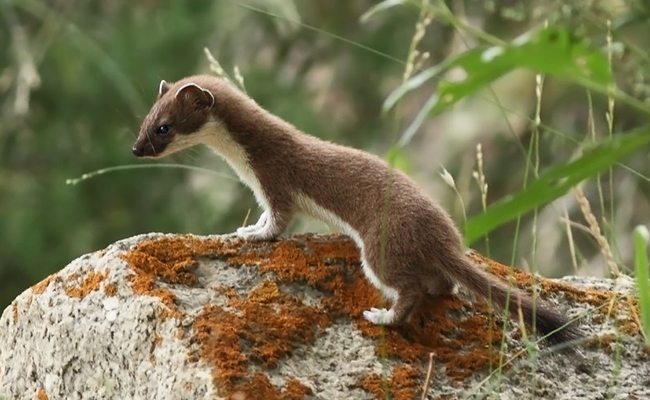

Zone géographique : Amérique du Nord, Europe et Asie du Nord
lieu de vie : régions froides et en montagne où on la rencontre entre 1 000 et 3 000 mètres d'altitude.
alimentation : Carnivore
Longévité : 4 – 6 ans
Famille: Mustélidés
Taille : 19 – 32 cm
mode de vie : Diurne en été, davantage nocturne en hiver
comportement : elle grimpe aisément et nage bien. Elle repère ses proies à l'odeur et les tue en les mordant à
la nuque. Active, toujours en chasse, elle prospecte les terriers de rongeurs et les pierriers, entrant et
sortant continuellement.